Zapomeňte na pobledlé rajčatové vodnatění a plastové jahody bez vůně. V supermarketu Fresh nakupujeme přímo u ověřených pěstitelů z okolí Zlína a Uherského Hradiště. Každé ráno přijíždí čerstvá dodávka – od regionálního farmáře přímo na váš stůl, bez meziskladů a týdenního cestování.
Vyberte si z kategorie – vše v nabídce odpovídá aktuální sezóně a pochází od našich stálých dodavatelů.
Lokální & sezónní
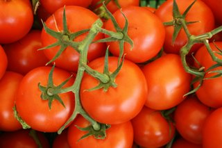
Rajčata Moravská polní
Klasické lukulové rajče z otevřeného pole pěstitelů z Uherskohradišťska. Plná chuť, pevná dužnina, sladce nakyslá šťáva. Žádné skleníky.
Původ: Uherskohradišťsko🇨🇿 CZ
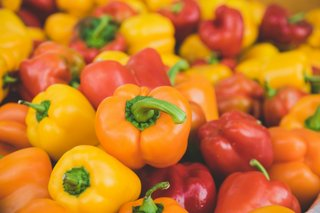
Paprika sladká barevná
Tlustomasá sladká paprika v červené, žluté i oranžové barvě. Vyznačuje se extra vysokým obsahem vitaminu C, křupavou texturou a jemnou sladkostí.
Původ: jižní Morava🇨🇿 CZ
Nová sklizeň
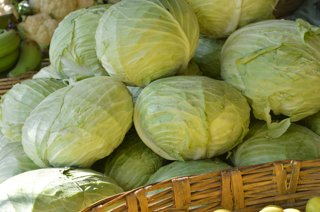
Zelí hlávkové čerstvé
Kompaktní, pevná hlávka čerstvě sklizeného bílého zelí od farmáře Beneše ze Zlínska. Ideální na kysané zelí, zeleninové saláty i vaření.
Hmotnost: cca 1,5–2 kg🇨🇿 CZ
Sezóna vrcholí
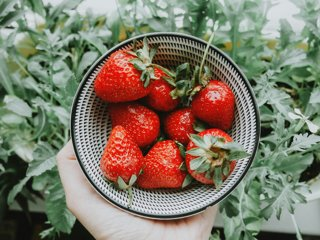
Jahody polní Zlínsko
Vonné polní jahody odrůdy Honeoye a Elsanta od zahrádkáře Kubiše z Fryštáku. Sklízeny ráno, v poledne jsou u nás na pultu. Pravá vůně dětství.
Balení: 500 g miška🇨🇿 CZ
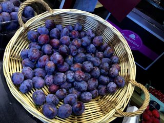
Švestky valašské modré
Tradiční modrá švestka z valašských sadů. Sladká, aromatická, s oddělující se peckou. Ideální čerstvá i na povidla, sušení nebo švestkový koláč.
Balení: 1 kg sáček🇨🇿 CZ
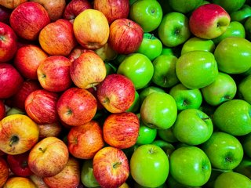
Jablka z Luhačovického sadu
Odrůdy Jonagold, Topaz a Golden ze starých sadů rodiny Procházkovy z Luhačovic. Jablka z integrované produkce – bez zbytečné chemie, s přirozenou voskovou slupkou.
Balení: volný výběr / kg🇨🇿 CZ
Sklizeno dnes
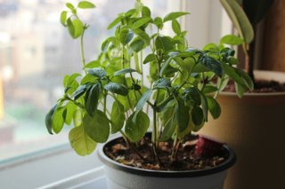
Bazalka zelená čerstvá
Vonná italská bazalka pěstovaná v živém hrnku – nesklizená, takže si ji odnesete domů a listy přibývají. Ideální do pesta, na caprese nebo jako koření za okno.
Živý hrnkový keřík🇨🇿 CZ
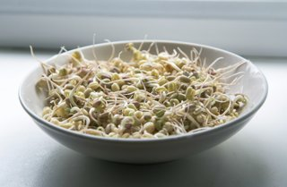
Klíčky slunečnicové
Čerstvě naklíčené slunečnicové semínko bohaté na vitamín E, hořčík a zdravé tuky. Ořechová chuť, křupavá textura. Skvělé do salátů, sendvičů nebo smoothie.
Balení: 100 g krabička🇨🇿 CZ
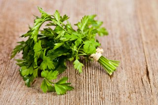
Petržel plochá čerstvá
Svazek čerstvé ploché petržele (italský typ) s intenzivnější chutí než kadeřavá. Sklizena ráno, v poledne je na pultu. Zásobárna vitamínu C a železa.
Balení: svazek ~50 g🇨🇿 CZ
Bio certifikát
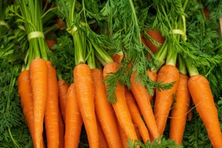
Mrkev bio s natí
Bio certifikovaná mrkev ze statku Zelená farma Vizovice. Přirozeně sladší díky pomalejšímu růstu, kratší a tlustší kořen. Nať je jedlá – do polévky nebo smoothie.
Balení: svazek 500 g🌱 BIO
Bio certifikát
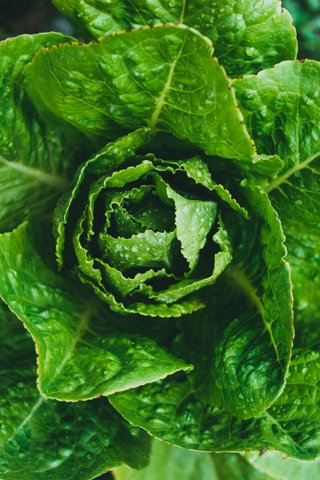
Salát římský bio s kořenem
Pevný rimánský salát prodávaný s kořenem v půdě – vydrží čerstvý o 3–4 dny déle než trhané varianty. Bez pesticidů, vodnatost na vrcholu ranní sklizně.
Hmotnost: cca 300–400 g🌱 BIO
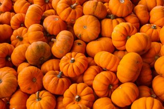
Dýně Hokkaido z Valašska
Oblíbená oranžová dýně Hokkaido od farmáře Staňka z Vsetínska. Slupka je po uvaření jedlá, dužnina jemně oříšková. Výborná na polévku, pečená i na rizoto.
Hmotnost: 1–1,5 kg kus🇨🇿 CZ
Sezónní kalendář dostupnosti
Víme, kdy je co nejlepší. Aktuálně zvýrazněné produkty jsou právě v plné sezóně – nejvyšší chuť, nejnižší cena, nejkratší cesta od pole k vám.
🍓
Jahody
Polní sezóna vrcholí – sklizeno ráno, na pultu v poledne.
KvČvČnSp
🍅
Rajčata polní
Moravská polní rajčata – čerstvá sklizeň z Uherskohradišťska.
ČnSpŘíjLis
🍑
Švestky valašské
Brzy začíná podzimní valašská sezóna ze starých sadů.
SpŘíjLisPro
🎃
Dýně Hokkaido
Podzimní sklizeň z Vsetínska – skladuje se až do zimy.
SpŘíjLisPro
🥬
Zelí hlávkové
Nová sklizeň od farmáře Beneše – pevná hlávka, čerstvá chuť.
ČnSpŘíjLis
🍎
Jablka ze sadu
Poctivě uskladněná sklizeň z Luhačovic – dostupná po celý rok.
ŘíjLisProLed
Naši lokální farmáři
Každý kus ovoce a zeleniny má u nás jméno a adresu. Nás nezajímá, kde je nejlevněji – zajímá nás, kde je nejlépe.
Rodinný statek Kubiš – Fryšták
Šestá generace zahradníků pěstuje polní jahody a letní ovoce přímo v podhůří Vizovických vrchů. Sklizňový den je u nás nejpozději do oběda – bez chlazení a přepravy přes půl republiky.
Zelená farma Vizovice – bio certifikace KEZ
Ekologický statek s platnou bio certifikací od organizace KEZ. Specializuje se na kořenovou zeleninu, hlávkové kultury a čerstvé bylinkové hrnkové keříky. Každý řádek pole je auditovaný bez výjimky.
Sady Procházkovi – Luhačovice
Rodinné jabloňové a švestkové sady na svazích Bílých Karpat s více než šedesátiletou tradicí. Odrůdová rozmanitost a integrovaná ochrana bez zbytečné chemie – výsledkem jsou jablka s přirozenou voskovou slupkou a plnou chutí.
Farmář Beneš – Zlínsko (zelenina)
Jihomoravský pěstitel zeleniny, který zásobuje náš pult paprikou, zelím a kořenovou zeleninou. Pěstuje výhradně ověřené odrůdy vhodné pro místní klima – bez urychlovačů zrání a sklízelového postřiku.